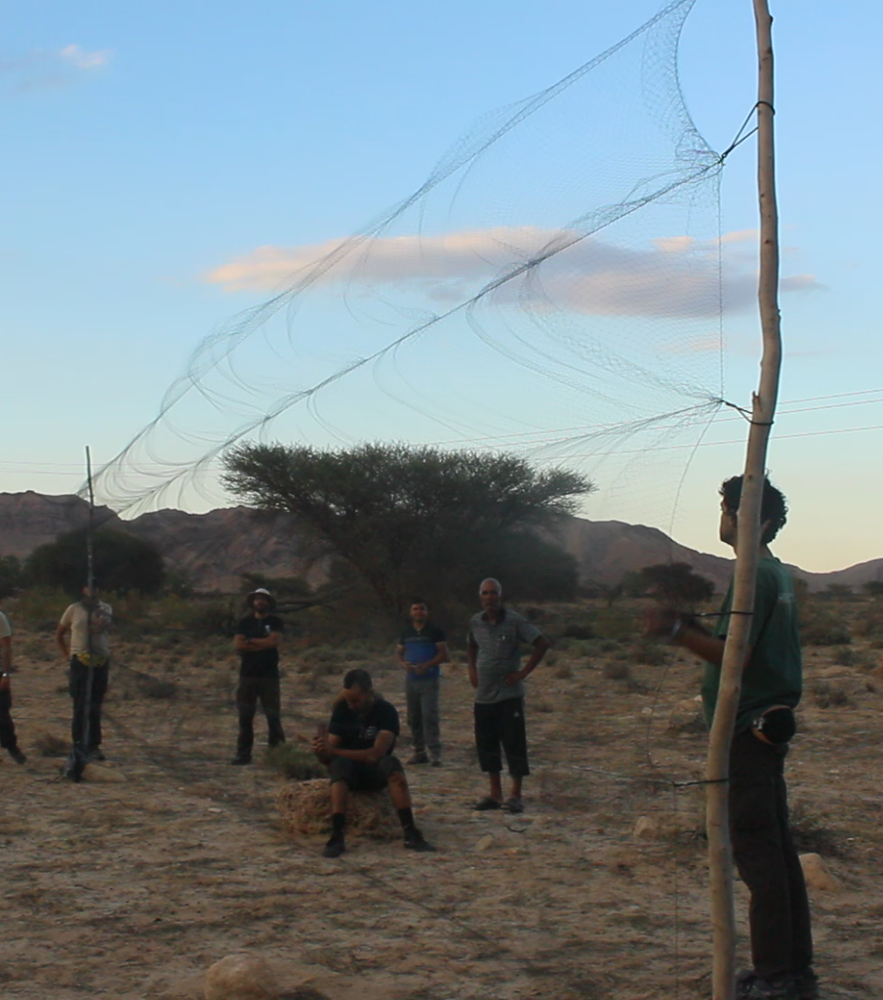
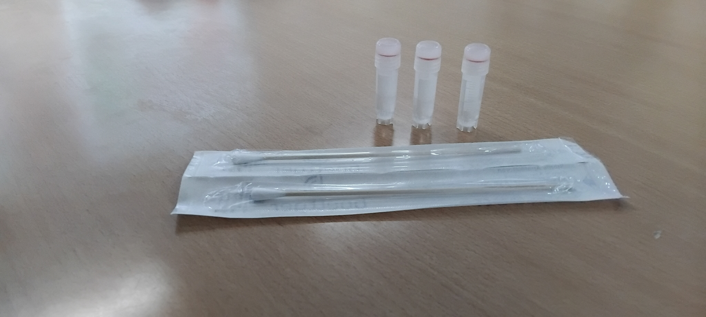

Bat Field Study, Netting & Monitoring Protocol
Session Lead: Mr. Khaled Ferchichi
Affiliation: .........................
Subject: ...........................
1. Tunisian Bat Diversity
Bats (Order Chiroptera) represent roughly 20% of all living mammal species worldwide. In Tunisia, around 20 species of bats have been recorded across arid, Mediterranean, and cave ecosystems, including key families such as Rhinolophidae (horseshoe bats) and Vespertilionidae. As primary predators of nocturnal insects, bats provide critical ecosystem services through pest control and ecological monitoring.
2. Mist Net Installation & Ground Setup
Capturing bats for ecological and health monitoring requires the strategic deployment of specialized mist nets across active flight corridors.
Ground Setup Instructions:
- Strategic Placement: Put nets in natural flight path.
- Pole Anchoring & Tension: Display securely into the ground to maintain proper horizontal line tension.

Net
Mist nets utilized for bat sampling feature specific design characteristics engineered to ensure safe capture without damaging delicate wing membranes (patagium). It is made of ultra-fine black nylon or polyester monofilament mesh with built-in horizontal shelf lines that form loose pockets to gently intercept bats in flight. Bats have high metabolic rates and are exceptionally vulnerable to stress, rapid cooling, and wing entanglement when held in nets for extended periods.
Mandatory Monitoring Frequency:
Nets must be monitored continuously and checked every 10 to 15 minutes. Captured bats must be disentangled immediately with extreme care and transferred to individual, clean cloth bags to prevent injury or stress.
3. Data Collection & Biological Sampling
Processing captured bats requires strict biosecurity protocols (including protective gloves) to ensure researcher safety and animal welfare.
Standard Sampling Workflow:
- Morphometric Diagnostics: Record species identification (using standardized species codes like
RHCYorRHHI), sex, age class, forearm length (mm), reproductive status, and body weight. - Non-Lethal Biological Samples: Collect oral/salivary swabs, fresh guano/fecal samples for dietary or pathogen analysis, and wing-punch tissue biopsies for population genetics.

4. Habitat Release & Longitudinal Site Recurrence
Immediate Site Release
Once data and non-lethal samples are collected, bats must be released at the exact site of capture during the same night to allow them to return to their roosts and normal foraging activities.
Repeated Site Sampling Strategy
Surveys are repeated across identical station locations multiple times over different seasons or consecutive nights. Returning to fixed monitoring sites builds reliable baseline data, tracks local population trends, and accounts for seasonal fluctuations in activity.